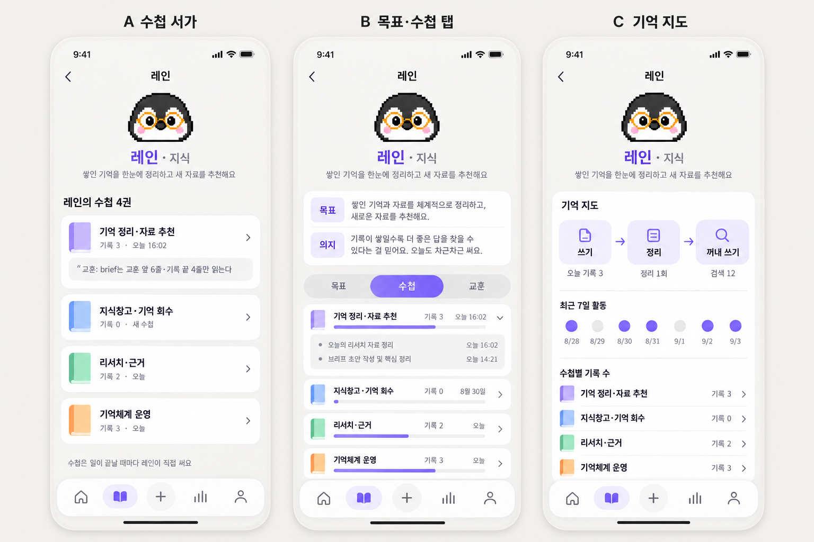

크루 기억은 이제 「시작할 때 내 수첩을 펼치고 → 끝날 때 적고 → 밤낮으로 다듬어 → 다음 일의 시작으로」 한 바퀴 돌아요.
10/30 오전 점검에서 수첩이 사흘 동안 한 줄도 안 쓰인 원인 둘(일꾼이 옛 판으로 돎, 터미널엔 지시 없음)을 찾았고, 오후에 루프·레인이 길을 다시 이었어요. 아래 0절이 지금 설계, 1~4절은 오전 점검 기록이에요.
26권크루 수첩 — 다섯 크루가 맡은 일마다 한 권씩
4곳수첩이 펼쳐지는 자리 — Claude·Codex 터미널, 크루네 카드, 기억 검색
5회평일 「스스로 일 찾기」 — 부르지 않아도 크루가 일을 가져가요
03:00야간 정제가 수첩 교훈을 공용 기억으로 올려요
0. 지금 설계 — 기억 순환 흐름도
▍루프가 10/30 이은 길▍레인이 맡은 정리
A
일이 생기는 곳
샐리가 부를 때터미널(Claude·Codex)·크루네 카드·Slack 방. 이름으로 부르면 그 크루가 맡아요
스스로 일 찾기평일 13:30 레인 · 14:00 나나 · 14:30 키키 · 15:00 젠지 · 15:30 루프. 되돌릴 수 있는 일만 바로 하고, 바깥으로 나가면 먼저 물어요
정기 업무·아침 회의아침·저녁 브리프, 인스타 시안, 앱 게시 제안, 마케팅 데일리, 09:30 회의
회의 음성회의록과 화자 기억, 할 일 표
시작하면 — 내 기억부터 펼쳐요
B
시작할 때 받는 기억
기억 브리프최근 결정 5·교훈 5·미결 큐. Claude·Codex 모두 자동
수첩 안내 한 줄「루프야」처럼 이름으로 부르면 그 크루 수첩을 여는 명령이 따라와요. Claude·Codex 둘 다
크루네 첫 회차페르소나 + 목표·의지·영역 + 맞는 수첩의 목표·교훈 6줄·최근 기록 4줄
기억 검색결정·교훈·사실·세션 기록에 더해 다른 크루 수첩까지 찾혀요
끝나면 — 두 군데에 남겨요
C
끝날 때 쓰는 곳
크루 수첩 log그 일의 수첩에 한 일 한 줄 + 교훈 한 줄. 새 교훈이 맨 위에 와요
세션 기록기기별 월 장부에 사건 기록과 승격후보·회고. 회맥은 쓰기만, 승격은 집맥
크루 회고 장부크루네 회차마다 한 줄
루프 원장수리·결재 안건. 루프가 매 회차 다시 읽어요
밤낮으로 — 다듬어서 공용 기억으로
D
다듬는 곳
레인 정리빈 교훈·겹친 날짜 정리, 잘못 든 줄 옮기기, 빠진 교훈 보충, 크루별 새 자료 추천(지식창고 id)
낮 정제 10:00·22:00회맥 세션의 교훈 후보를 수신함에
야간 정제 03:00집맥이 결정·프로젝트·일하는 법·사실로 승격. 이제 수첩 교훈도 같은 사건 하나로 세어 심사해요
기억 브리프 03:45승격된 것을 다음 날 시작 브리프로
↺ 다시 B로 — 다듬은 공용 기억과 수첩 교훈이 다음 일의 시작 브리프·수첩 안내·검색으로 돌아가요. 한 크루가 배운 것이 다른 크루에게도 닿는 길은 이 고리예요.
1. 오전 점검 때 기억이 흐르던 길
돌아감낡음·쓰기만막힘버려짐
01 들어오는 곳
크루가 일하는 자리
- 터미널 세션 (Claude·Codex) 주 통로대부분의 일이 여기서 끝나요
- 크루네 카드 돌아감회차마다 대화 기록을 남겨요
- Slack 크루 방 10/20 이후 조용회의록 배송만 쓰는 중
- 회의 음성 돌아감화자 기억까지 쌓여요
02 적는 곳
일이 끝나면 남는 기록
- 세션 기록(history) 매일모든 크루 공용, 엔진·기기별 월 장부
- 크루 회고 장부 매일크루네 회차 회고 한 줄씩 (10/28~30 젠지 21·키키 4)
- 루프 원장 매 회차수리·결재 안건, 루프가 매번 다시 읽어요
- 크루 수첩 16권 막힘10/27 23:45 시드 뒤 기록 0
03 다듬는 곳
밤낮 정제
- 낮 정제 10:00·22:00 오늘 10:07교훈 후보를 수신함에 모아요
- 야간 정제 03:00 오늘 03:31결정·프로젝트·일하는 법·사실로 올려요
- 기억 브리프 03:45 오늘최근 결정·교훈·미결을 한 장으로
- 주간 크루 점검 한 번도 안 돎아카데미·게이트 장부를 읽을 유일한 자리
04 꺼내 쓰는 곳
크루가 불릴 때 받는 기억
- 세션 시작 브리프 Claude·Codex결정 5·교훈 5·미결 큐가 자동으로 들어가요
- 대화 회상 자동 주입 Claude만Codex는 지시만 있고 자동 주입은 없어요
- 크루네 일꾼의 수첩 브리프 미배포코드는 있는데 돌고 있는 판에 없어요
- 옵시디언 미러 돌아감사람이 읽는 사본 (읽기 전용)
들어온 일 → 기록 → 정제 → 다음 세션의 브리프. 이 고리에 수첩만 빠져 있어요.
2. 크루별 — 지금 하는 일과 쓰는 기억
키키비서·기획
지금 하는 일
- 팀 정책 정리 (69장 중 41장 반영)
- 아침·저녁 브리프 보완
- 채용 공고 — 마케터로 제목 재정정
- 개인경비 PDF 날짜순 정렬
- 서비스홈 모션 기획 → 나나 인계
쓰는 기억
- 공용 허브 전체 가장 많이
- 내장 페르소나 쓰임
- 수첩 6권 10/27 멈춤
- Slack 대화 장부 10/20 멈춤
오늘 카드 2장이 「쓸 수 있는 AI 계정 없음」으로 막혔어요. 맡은 영역 중 프로모션·이벤트 기획은 수첩이 없어요.
나나QA·개발
지금 하는 일
- 에어브릿지 실기 QA (iOS 설치 귀속 원인 미확정)
- 알파 QA 티켓 (CCQ-973~978)
- GA 재검증 3건 보류
- 크루네 완료 버튼 배포
- 모션 시험 — 인계 카드는 「멈췄어요」
쓰는 기억
- QA 판정 기록 쓰임
- 페르소나 CS 역할 미반영
- 수첩 2권 10/27 멈춤
- 세션 기록 쓰임
10/30 귀속 판정·URL 입력 위치 교훈이 수첩엔 없고 세션 기록에만 있어요.
레인지식
지금 하는 일
- 지식창고 운영 (보관 74건)
- 모션·렌더 조사 → 나나·키키 인계
- 채용 후보 15명 (상세 미열람)
- 스킬 10선 질문 — 5일째 답 대기
쓰는 기억
- 판단 경향 파일 검토 눈에 주입
- 지식창고 색인 매일
- 수첩 1권 남의 과거 일 3줄
실제 담당과 수첩이 가장 많이 어긋나요. 레인의 본업인 「지식창고·기억 회수」 수첩이 없어요.
젠지콘텐츠
지금 하는 일
- 다음 주 인스타 세 편 (재탕 반려 뒤 재작업)
- 앱 게시 제안 (채택률 목표)
- 마케팅 데일리 (가입·탈퇴·DAU)
- 포스터 섭외 실행안 v3
쓰는 기억
- 옵시디언 인스타 학습노트 오늘 14:33
- 제안 로그·회고 매 회차
- 수첩 3권 10/22 멈춤
배우긴 하는데 수첩 대신 학습노트에 쌓여요. 학습노트는 회상 검색에 안 잡혀요. 수첩 판정이 동점이면 늘 키키에게 넘어가요.
루프점검
지금 하는 일
- 두 Mac 동기화·미발행 정리
- 옛 일꾼 반복 수리 (다섯 번째)
- cmux 요청 보드 0.3.6
- iCloud 충돌 사본 1,068개 이동 제안
- 결재 대기 안건 7건
쓰는 기억
- 루프 원장 매 회차 읽음
- 점검 상태 기록 10분마다
- 수첩 4권 10/27 멈춤
원장이 수첩 역할을 대신하고 있어요. 오늘 카드도 「AI 계정 없음」으로 막혔어요.
3. 크루끼리 기억을 나누나
나눠짐
- 공용 허브 — 결정·일하는 법·사실은 다섯 크루와 두 엔진이 같이 받아요
- 넘기기 카드 — 받는 크루 새 카드에 맥락이 따라가요
- 논의 카드 — 다음 차례 크루가 앞 발언을 받아요
- 두 Mac — git이 정본을 나르고, 대화 수집본은 SSH로 오가요
안 나눠짐
- 수첩은 자기 것만 보여 줘요. 다른 크루의 교훈은 직접 열어야만 읽혀요
- 수첩 교훈이 공용 허브로 올라가는 길이 없어요
- 젠지 학습노트는 회상 검색 밖이라 다른 크루가 못 찾아요
- Claude와 Codex는 서로의 세션을 이어받지 못해요
갈라짐
- 회맥 세션 기록이 두 이름으로 나뉘어 쌓여요 (60건 · 372건)
- 회맥 자동 동기화가 오늘 13:27 실패해 일꾼 적용을 건너뛰었어요
- 기기 간 편지 26통이 열린 채예요 (14일 넘은 것 25통)
- 미결 큐에 기한 지난 재심 18건
4. 쓰지 않고 버려지는 기억
각 항목마다 읽는 곳이 정말 없는지 따로 반박 점검을 돌렸어요. 반박에 성공한 세 개는 맨 아래 따로 적었어요.
| 기억 | 상태 | 무슨 일인가 |
|---|
| 크루 수첩 16권 | 막힘 | 읽고 쓰는 코드는 있는데 돌고 있는 일꾼 판에 없어요. 터미널 세션엔 지시가 없어요. |
| Slack 대화 색인 통로 | 막힘 | 회상 검색이 Slack 원료 폴더를 찾는데 폴더가 없어요. 색인된 Slack 대화 0건. |
| 옵시디언 두뇌 수신함 | 막힘 | 제안 8건이 9/16 이후 정본으로 올라가지 않았어요. |
| 아카데미 증거표 (159KB) | 쓰기만 | 낮 정제가 하루 두 번 적지만, 읽을 주간 크루 점검이 한 번도 안 돌았어요. |
| 게이트 장부 | 쓰기만 | 10/4 이후 0행. 읽을 곳도 같은 주간 점검뿐이에요. |
| 선호 기록 (108KB) | 쓰기만 | 야간 정제가 241행을 더 쌓았는데, 이걸 받는 키키 모범 답안은 10/4에서 멈췄어요. |
| Codex 자체 메모리 | 쓰기만 | 설정상 꺼져 있는데 파일은 오늘도 생겨요. 읽는 곳은 없어요. |
| 스킬 제안 2건 · 보류 결정 1건 | 낡음 | 수신함에 들어간 뒤 아무도 열지 않아요. 보류 결정은 크루네 리뉴얼 톤이에요. |
| Claude 자동 메모리 (137개) | 버려짐 | 자동 불러오기를 일부러 꺼 둬서 아무 데서도 읽지 않아요. 9/7 이후 그대로예요. |
| 키티 성장노트 1편 | 버려짐 | 10/2 크루 출범 때 한 편 쓴 뒤 끝. 성장노트 고리는 코드로 생긴 적이 없어요. |
| 초기 이관 교훈 17개 | 버려짐 | 9/5 옵시디언 재정리 때 옮겨 온 것. 개수만 세고 내용은 안 읽어요. |
| 9/16 Slack QA 증거 묶음 | 버려짐 | 당시 실행 기록이 각주로 가리킬 뿐이에요. |
| 작업 사본 속 크루 정의·기억 사본 | 중복 | 임시 작업 폴더에 크루 정의 20개·기억 사본 22벌(약 200MB). 정본과 같은 건 하나도 없어요. |
반박으로 살아남은 것 — 푸시 실패 기록 15건(야간 정제가 열어서 닫아요), 레인 판단 경향 파일(모든 검토 눈에 주입돼요), 루프 원장(274KB지만 세 곳이 실제로 읽어요).
5. 10/30 루프·레인이 푼 것
샐리가 두 크루에게 새긴 목표 — 루프는 기억이 꼬임 없이 도는 길을 닦고, 레인은 그 길에 쌓인 기억을 한눈에 펼쳐지게 정리하고 새 자료를 추천해요.
| 고리 | 상태 | 바뀐 것 |
|---|
| 쓰기 — 터미널 | 이어짐 | 크루 이름으로 부르면 그 크루 수첩을 여는 명령과 끝날 때 남기는 명령이 자동으로 안내돼요. |
| 읽기 — 크루끼리 | 이어짐 | 수첩 26권이 대화 회상 검색에 들어가서, 다른 크루의 교훈도 검색으로 찾혀요. |
| 위로 올리기 | 이어짐 | 야간 정제가 그날 새로 쌓인 수첩 교훈을 공용 기억 승격 심사에 넣어요. |
| 빈 영역 | 채움 | 키키 프로모션·이벤트, 레인 지식창고·기억 회수, 레인 기억 정리·자료 추천, 키키 채용, 젠지 앱 게시 제안 수첩을 새로 만들었어요. |
| 레인 정리 1회차 | 끝 | 빈 교훈 12줄·겹친 날짜 57곳 정리, 잘못 든 기록 15줄 이동, 10/28~30 빠진 교훈 22건 보충, 크루별 추천 자료 9건. |
| 크루네 일꾼 | 교체함 | 15:51 수첩이 들어간 판으로 바꿨어요. 이제 크루네 카드도 첫 회차에 수첩을 받고 끝에 기록해요. |
6. 샐리가 정할 것
① 버려진 기억을 보관함으로 옮길까요
위 4절 표의 「버려짐」 넷과 작업 사본 중복분이 대상이에요. 지우지 않고 옮기기만 해요.
② 주간 크루 점검을 살릴까요, 없앨까요
아카데미 증거표와 게이트 장부는 이 점검이 한 번도 돌지 않아서 쓰기만 되고 있어요. 살리면 매주 비용이 들고, 없애면 두 장부도 같이 접어요.
③ Codex 세션에도 수첩 안내를 넣을까요
이번 연결은 Claude 세션만 받아요. Codex는 다른 세션이 손보고 있는 공유 설정을 건드려야 해서 이번엔 하지 않았어요.
7. 크루네 프로필 — 수첩 보기 시안
크루 프로필을 열면 그 크루가 어떤 수첩으로 기억하는지 보여 주는 화면이에요. 세 안 가운데 하나를 고르시면 나나가 만들어요.

A 수첩 서가 — 수첩을 책처럼 나열하고 첫 권의 교훈 한 줄. B 목표·수첩 탭 — 목표·의지를 위에, 수첩마다 최근 7일 활동 막대와 펼침. C 기억 지도 — 쓰기·정리·꺼내 쓰기 횟수와 7일 기록 점, 수첩별 기록 수. 날짜·숫자는 예시예요.